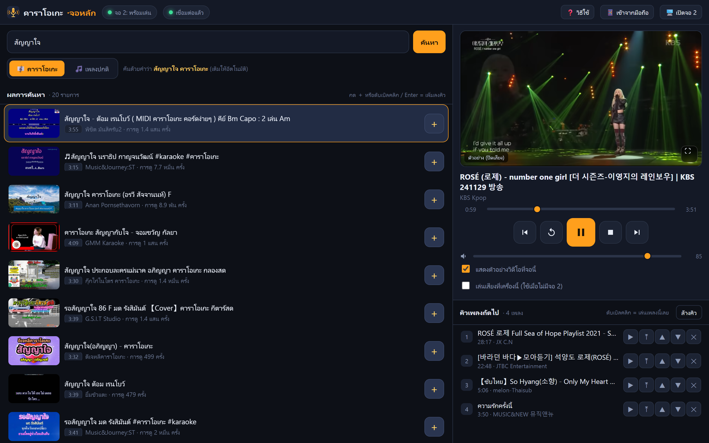
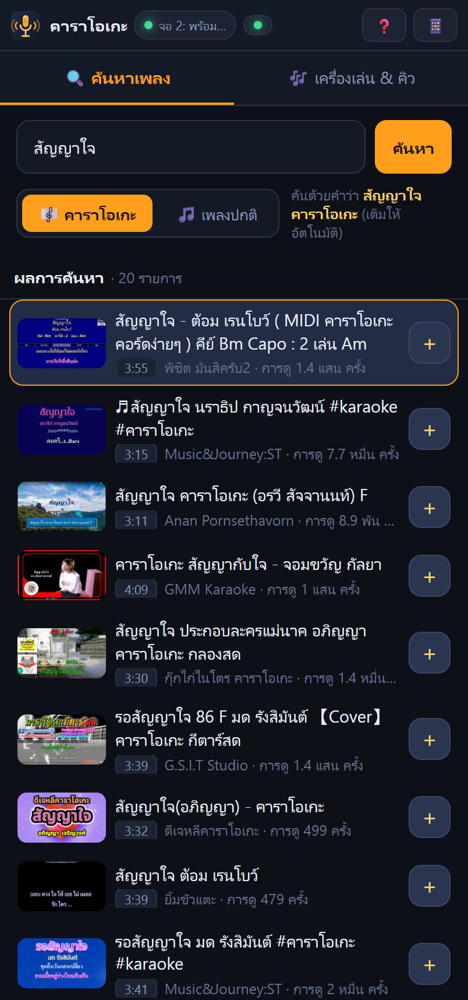

ค้นเพลงจาก YouTube เล่นออกจอใหญ่ แล้วให้ทุกคนในงานหยิบมือถือขึ้นมาจิ้มเพลงเข้าคิวเองได้ ไม่ต้องเดินมาที่คอม
ไฟล์เดียวจบ · ไม่ต้องติดตั้ง · ไม่ต้องสมัครอะไร · สำหรับ Windows 10/11

พิมพ์ชื่อเพลงแล้วกด Enter ระบบเติมคำว่า “คาราโอเกะ” ให้เอง จะได้เจอแต่คลิปที่ร้องตามได้ อยากฟังเพลงปกติก็สลับโหมดได้
จอคอมเป็นแผงควบคุม ทีวีหรือโปรเจกเตอร์เป็นจอ 2 แสดงเฉพาะวิดีโอเต็มจอ ไม่มีปุ่มอะไรมากวนสายตาคนร้อง
สแกน QR แล้วเพิ่มเพลงเข้าคิวจากมือถือได้เลย ต่อพร้อมกันได้หลายสิบเครื่อง ไม่ต้องแย่งคีย์บอร์ดกัน
ใครใส่ทีหลังก็ได้ร้องทีหลัง ไม่มีแซงคิว ถ้าอยากดันเพลงไหนขึ้นก่อนก็ดับเบิลคลิกที่เพลงนั้นได้
ถ้ามีคนใส่เพลงที่มีอยู่แล้ว ระบบบอกเลยว่าอยู่คิวที่เท่าไหร่ แล้วถามก่อนว่าจะใส่เพิ่มอีกไหม
ปิดโปรแกรมแล้วเปิดใหม่ คิวเดิมยังอยู่ครบ ไม่ต้องมานั่งใส่เพลงใหม่ทั้งหมด

เปิดโปรแกรมแล้วกดปุ่ม เข้าจากมือถือ จะมี QR ขึ้นมา ให้เพื่อน ๆ ในงานสแกนได้เลย ไม่ต้องโหลดแอป ไม่ต้องสมัครอะไร แค่เปิดเบราว์เซอร์ในมือถือก็ค้นเพลง เพิ่มเข้าคิว ดูว่าเหลืออีกกี่เพลงถึงตาตัวเอง และสั่งเล่น/หยุด/ข้ามได้เหมือนนั่งอยู่หน้าคอม
ใช้ได้ทั้งแนวตั้งและแนวนอน ขอแค่ต่อ Wi-Fi วงเดียวกับเครื่องที่เปิดโปรแกรม
เป็นเรื่องปกติของโปรแกรมเล็ก ๆ ที่ไม่ได้ซื้อใบรับรองราคาแพงมาเซ็นกำกับ กด More info แล้วกด Run anyway ก็ใช้งานได้ตามปกติ
| ระบบปฏิบัติการ | Windows 10 หรือ 11 |
| เบราว์เซอร์ | Chrome หรือ Edge (Windows มี Edge ติดมาให้อยู่แล้ว) |
| อินเทอร์เน็ต | ต้องมี เพราะเพลงมาจาก YouTube |
| มือถือ | ต่อ Wi-Fi วงเดียวกับคอม |
| สิ่งที่ไม่ต้องมี | ไม่ต้องลง Python ไม่ต้องขอ API key ไม่ต้องสมัครสมาชิก |
ใช้ฟรี ไม่มีโฆษณา ไม่เก็บข้อมูลผู้ใช้